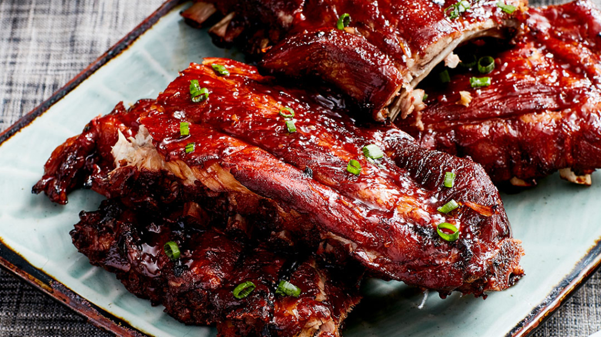

Instant Pot® Sweet Baby Back Ribs

Description
Tender, sweet, and sticky baby back ribs that only take 1 hour from prep to plate. If you like them with a little spice, add a teaspoon of cayenne pepper to the dry rub.
Baby backs come from the back loin section and are smaller and more tender. Spare ribs, or side ribs, come from under the babies and are larger, tastier, and meatier, with a lot of bone and more fat.
Ingredients
- 2 racks baby back pork ribs
Dry Rub:
- ¼ cup dark brown sugar
- 2 tablespoons garlic salt (such as Lawry's®)
- 2 tablespoons chili powder
- 1 teaspoon ground black pepper
- 1 teaspoon cayenne pepper, or to taste (Optional)
Cooking Liquid:
- 1 cup beef broth
- 12 fluid ounces root beer
- 2 tablespoons apple cider vinegar
- 1 teaspoon liquid smoke flavoring
- 1 cup barbecue sauce (such as Sweet Baby Ray's®), or more to taste
Steps
- Use a butter knife to cut into an edge of the rib racks. Use a paper towel to grab and lift off the silvery membranes.
- Combine brown sugar, garlic salt, chili powder, black pepper, and cayenne pepper in bowl. Coat the ribs generously with the dry rub.
- Place the trivet inside the Instant Pot®. Pour in broth, root beer, vinegar, and liquid smoke. Place ribs on the trivet on their sides, with one inside the other. Close and lock the lid and make sure the vent is sealed. Select manual high pressure and set the timer for 30 minutes. Allow 10 to 15 minutes for pressure to build.
- Release pressure using the natural-release method according to manufacturer's instructions for 15 minutes. Release remaining pressure carefully using the quick-release method according to manufacturer's instructions, about 5 minutes. Unlock and remove the lid.
- Set an oven rack about 6 inches from the heat source and preheat the oven's broiler on the highest heat setting. Place a rack 6 inches from the heat source.
- Transfer ribs to a broiling pan and generously coat with barbecue sauce.
- Cook in the broiler until barbeque sauce is bubbly and caramelized, 5 to 7 minutes.